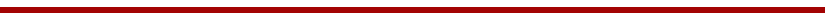
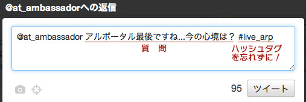

|
7月29日より開催中の「ありがとうアルポータル」企画。最終日となる8月31日は皆様へ感謝の気持ちを込めて
「ニコニコ生放送」「Ustream」にて『生放送だよ！ありがとうアルポータル！～最後の晩餐！？～』を開催！
最後の最後だからこその、ありがとう企画です。「アルトネリコ」シリーズの河内プロデューサー＆土屋ディレクターの禁断トーク！？などなど・・・
生放送ならではのはっちゃけぶりにご期待ください！
今回を見逃したら本当に次は無い！生でもなんでも要チェック！
■イベント名
生放送だよ！ありがとうアルポータル！～最後の晩餐！？～
■放送日時
2011年8月31日(水) 19：00頃～
■『生放送だよ！ありがとうアルポータル！〜最後の晩餐！？〜』放送会場はこちら！

★生放送だよ！ありがとうアルポータル」」出演者への質問大募集！★
８月２６日から８月３０日まで『ATアンバサダー』Twitterアカウント
にて出演者２人への質問を受け付けます！
Twitterアカウント“at_ambassador”に返信をして、『#live_arp』をつけて質問をしてください！
▼下の図のように質問してくださいね！▼

皆様からの「生放送だよ！ありがとうアルポータル」の質問、ドーンとお待ちしています！
■『ATアンバサダー』Twitterアカウント
 http://twitter.com/at_ambassador http://twitter.com/at_ambassador
■出演者
「アルトネリコ」シリーズ
開発プロデューサー河内厚典
開発ディレクター土屋暁
アルトネリコ 総合情報ファンサイト「アルポータル」
|